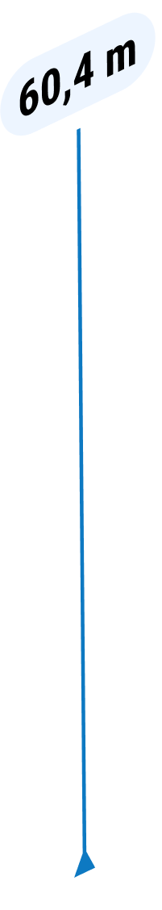

Aqua Maria
Минеральная, Столовая, Газированная
10
Объем 0,5л - 20 лей
Объем 1,5л - 25 лей
Aqua Maria – минеральная вода чешского курорта Марианские Лазни. Эта
столовая вода с низкой минерализацией – лучшее, что создала природа
для поддержания водного баланса вашего организма.


 Марианские Лазни
Марианские Лазни

Марианские Лазни, более раннее название - Мариенбад, был назван в
честь источника Марии, открытого более четырехсот лет назад. Это
место, одаренное лечебными источниками минеральной воды и
восхитительным природным ландшафтом - жемчужина курортного
треугольника Чехии, в который входят Карловы Вары.
Находясь в глубинных недрах, вода проходит все стадии насыщения
полезными минералами, солями и газами, чтобы потом щедро одарить нас
своей силой. Каждый глоток этой воды наполнен живой природной
энергией, которую невозможно получить из искусственных аналогов.


Месторождение
Чистейший Источник Марии бьет из скважины глубиной 60,4 м,
находящейся в нетронутом цивилизацией природном оазисе.
Высокотехнологичный розлив гарантирует полное отсутствие примесей с
других горизонтов и исключительную чистоту природной воды. Первый
контакт воды с миром происходит при вскрытии бутылки.
